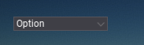

Dropdown

The Dropdown control lets user to pick one option from the list of options. Control shows the currently selected option.
Custom popup style
By default dropdown popup uses Dropdown control properties such as Background Color, Border Color, etc. to display a list of items to select from. But in many cases, games might want to customize this popup. To do so you can override one or more of the following functions in custom Dropdown implementation:
CreatePopupCreatePopupRootCreatePopupBackgroundCreatePopupItem
Here is an example dropdown implementation that adds the blur panel to the dropdown popup background:
public class DropdownWithBlur : Dropdown
{
[EditorOrder(0), Limit(0, 100, 0.1f)]
public float BlurStrength = 10.0f;
public DropdownWithBlur()
{
// Remove background
BackgroundColor = Color.Transparent;
}
protected override void CreatePopupBackground(DropdownRoot popup)
{
// Insert blur panel that will smooth background
var blur = new BlurPanel
{
BlurStrength = BlurStrength,
AnchorPreset = AnchorPresets.StretchAll,
Offsets = Margin.Zero,
Parent = popup.MainPanel,
};
base.CreatePopupBackground(popup);
}
}